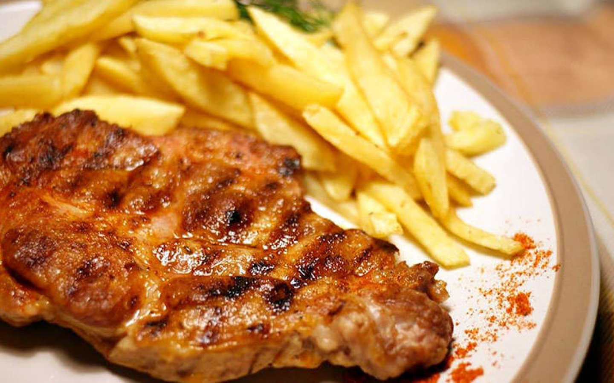

Pig's Neck with Fries

Spicy Pig's neck with crispy fries
This is another home-made recipe that I came up with during college and yes I did a lot of cooking during college
This one will be a lot shorter as it requires less steps to do
Ingredients
- Cooking Oil
- Potatoes
- Pig's Neck
- Cayene Pepper/Chilli
- Salt
- Pepper
- Peel the Potatoes
- Cut them into fries on your liking
- Beat the meat(pun intended) with the meat tenderizer
- Season the meat with Salt, Chilli and Pepper
- Turn on the stove on maximum heat for the fries
- Put cooking oil in the pan
- Put the fries in once the oil is hot enough
- Turn on the stove on medium heat for the meat now
- Wait for the grill to be very hot
- Place the meat on the grill
- Let the meat cook for ~5 minutes on each side depending on how thick the meat is
- Don't forget to season the fries with salt after taking them out
- Once the meat is cooked take it out place it on a plate and ENJOY